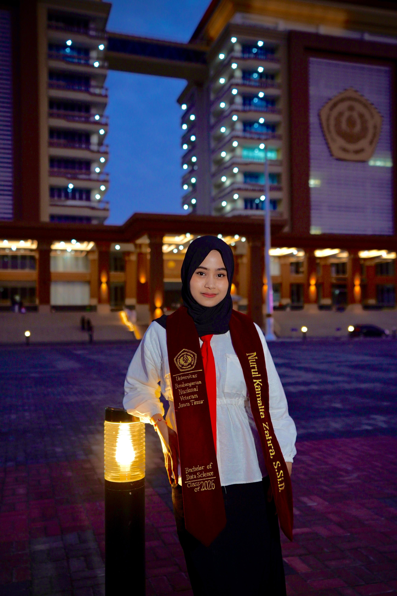
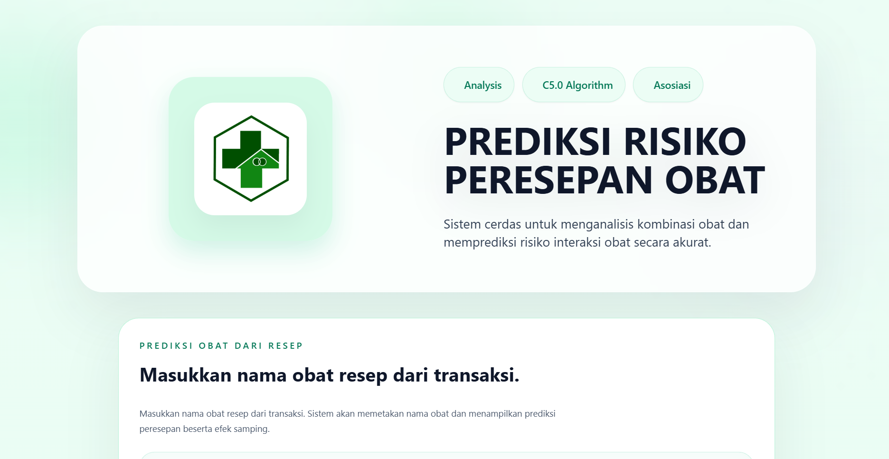

Halo, salam kenal! Saya Class of 2026
Nurul Kamalia Zahra, S.Si.D.
Lulusan S1 Sains Data UPN "Veteran" Jawa Timur dengan pengalaman magang di bidang Business Analysis & manajemen data program. Berpengalaman merancang sistem cerdas berbasis Machine Learning (C5.0) & Association Rule Mining (ARM) yang telah terdaftar resmi pada Surat Pencatatan Ciptaan Kementerian Hukum RI.

Nurul Kamalia Zahra
Tentang Nurul Kamalia Zahra
Latar belakang akademik, rekam jejak analitis, dan pencapaian karya cipta terdaftar.
Profil & Keahlian Inti
Data Science Graduate • Data Analyst • HKI Rights Holder
Nurul Kamalia Zahra, S.Si.D. adalah lulusan S1 Sains Data yang memiliki rekam jejak praktis dalam Business Analysis pada perusahaan logistik nasional (PT Pos Indonesia) dan manajemen data penyiaran televisi (PT Jawa Pos Media Televisi).
Terampil dalam analisis dan interpretasi data kuantitatif, pembuatan laporan komprehensif, serta pengambilan keputusan strategis berbasis data (data-driven decision making) menggunakan ekosistem Python, Microsoft Office, Power BI, Looker Studio, dan algoritma data mining.
Data Analysis
Analisis tren & interpretasi
Machine Learning
Model C5.0 & Prediksi
Decision Making
Solusi bisnis terukur
S1 Sains Data (S.Si.D.)
Universitas Pembangunan Nasional "Veteran" Jawa Timur
Fokus akademik komprehensif mencakup pemodelan statistik inferensial, penambangan data (data mining), algoritma machine learning, serta perancangan dashboard visual interaktif untuk kebutuhan analisis bisnis modern.
Pengalaman Kerja & Magang
Riwayat kontribusi profesional dalam Business Analysis dan manajemen data penyiaran media.
Business Analyst Intern
PT Pos Indonesia (Persero)
Pencapaian & Tanggung Jawab:
- Segmented customers and analyzed activity patterns to identify customer characteristics and support service strategies.
- Developed revenue forecasts to support business planning and decision-making.
- Created data visualizations and interactive dashboards to present actionable insights.
Pencapaian & Tanggung Jawab:
- Processed and evaluated television program performance data, including ratings and audience share.
- Analyzed audience characteristics, viewing patterns, and preferences across program segments.
- Delivered data-driven insights to support program evaluation and content development.
Library (Program) Intern
PT Jawa Pos Media Televisi
Proyek Unggulan: MEDRISK ANALYSIS
Sistem cerdas integrasi Machine Learning (Algoritma C5.0) & Association Rule Mining (ARM) untuk menganalisis kombinasi resep obat, memetakan risiko interaksi obat berbahaya, serta mengekstraksi pola aturan asosiasi peresepan multi-obat secara akurat.

1. Beranda Sistem: Prediksi C5.0 & Modul Asosiasi
Antarmuka utama sistem cerdas MEDRISK ANALYSIS yang mengintegrasikan klasifikasi algoritma C5.0 dan Association Rule Mining (ARM) untuk evaluasi risiko peresepan obat.
Surat Pencatatan Ciptaan
Jenis Ciptaan: Program Komputer
Fitur & Keunggulan Analitik C5.0 & ARM:
-
Klasifikasi Algoritma C5.0: Membangun Decision Tree untuk memprediksi kategori risiko peresepan obat (Sedikit Berisiko, Cukup Berisiko, Sangat Berisiko) berdasarkan golongan obat dan parameter riwayat pasien.
-
Association Rule Mining (ARM): Menambang pola keterkaitan kombinasi obat dari transaksi resep (146 aturan ditemukan) berbasis metrik Support, Confidence, dan Lift untuk mendeteksi obat yang sering diresepkan bersamaan dan berpotensi kontraindikasi.
-
Validasi Dosis & Obat Alternatif: Memetakan batasan dosis aman (anak vs dewasa), identifikasi risiko efek samping tukak lambung & alergi penisilin, serta rekomendasi substitusi obat pengganti yang lebih aman.
Keahlian & Kapabilitas
Perpaduan keahlian komputasi kuantitatif (Hard Skills) dan kemampuan kepemimpinan kolaboratif (Soft Skills).
Pendidikan, Sertifikasi & Hak Cipta (HKI)
Legitimasi akademik sarjana, sertifikasi kompetensi profesi BNSP, dan pengakuan hak cipta negara.
Surat Pencatatan Ciptaan
MEDRISK ANALYSIS
Pencatatan hak cipta resmi Program Komputer dari Kementerian Hukum Republik Indonesia (No. 001353841) atas nama Nurul Kamalia Zahra dkk.
Junior Web Programmer
Badan Nasional Sertifikasi Profesi
Standarisasi kompetensi profesi nasional dalam perancangan algoritma logika pemrograman, struktur basis data, serta antarmuka web interaktif.
S1 Sains Data (S.Si.D.)
UPN "Veteran" Jawa Timur
Kurikulum komprehensif mengintegrasikan matematika terapan, statistika, pemodelan Machine Learning, data mining, serta perancangan visualisasi bisnis.
Hubungi Saya
Punya tawaran kerja, proyek analitik, atau ingin berdiskusi seputar Data Science & MEDRISK? Kirim pesan langsung melalui saluran di bawah ini.
Bangkalan, Jawa Timur, Indonesia
Terbuka untuk posisi On-site (Surabaya, Jawa Timur, Jakarta), Hybrid, maupun Remote.
Kirim Pesan Langsung
Silakan isi formulir di bawah ini, saya akan merespons dalam waktu 1x24 jam.